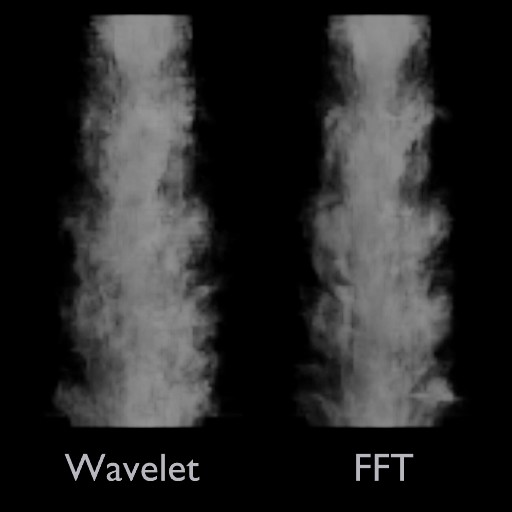
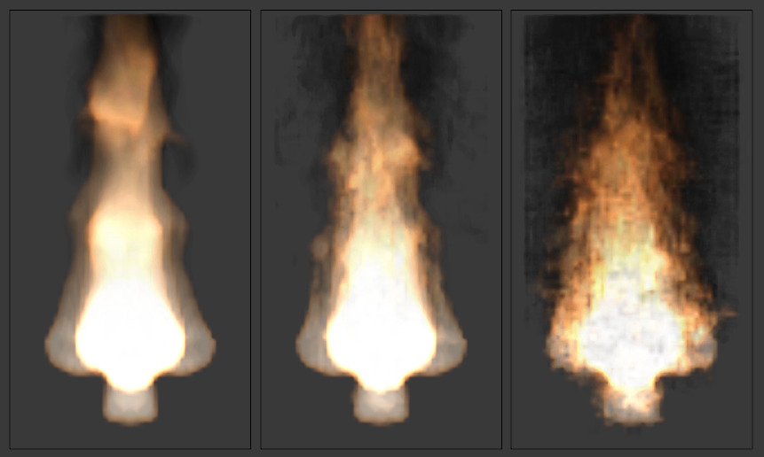

Smoke Domain¶
The domain object contains the entire simulation. Smoke and fire cannot leave the domain, it will either collide with the edge or disappear, depending on the domain’s settings.
Keep in mind that large domains require higher resolutions and longer bake times. You will want to make it just large enough that the simulation will fit inside it, but not so large that it takes too long to compute the simulation.
To create a domain, add a cube , Shift-A
and transform it until it encloses the area where you want smoke. Translation, rotation,
and scaling are all allowed. To turn it into a smoke domain, click Smoke
in , then select Domain as the Smoke Type.
Note
You can use other shapes of mesh objects as domain objects, but the smoke simulator will use the shape’s bounding box as the domain bounds. In other words, the actual shape of the domain will still be rectangular.
Smoke Domain settings.
设置¶
- Resolution
The smoke domain is subdivided into many “cells” called voxels (see voxel) which make up “pixels” of smoke. This setting controls the number of subdivisions in the domain. Higher numbers of subdivisions are one way of creating higher resolution smoke (See Smoke High Resolution)
Since the resolution is defined in terms of subdivisions, larger domains will need more divisions to get an equivalent resolution to a small domain.
Also see Note on Divisions and High Resolution.
- Time Scale
- Controls the speed of the simulation. Low values result in a “slow motion” simulation, while higher values can be used to advance the simulation faster (useful for generating smoke for use in still renders).
- Border Collisions
Controls which sides of the domain will allow smoke “through” the domain, making it disappear without influencing the rest of the simulation, and which sides will deflect smoke as if colliding with a Collision Object.
- Vertically Open
- Smoke disappears when it hits the top or bottom of the domain, but collides with the walls.
- Open
- Smoke disappears when it hits any side of the domain.
- Collide All
- Smoke collides with all sides of the domain.
- Density
Controls how much smoke is affected by density.
- Values above 0 will cause the smoke to rise (simulating smoke which is lighter than ambient air).
- Values below 0 will cause smoke to sink (simulating smoke which is heavier than ambient air).
- Temp. Diff.
The Temperature Difference setting controls how much smoke is affected by temperature.
The effect this setting has on smoke depends on the per flow object *Temp. Diff.* setting:
- Values above 0 will result in the smoke rising when the flow object Temp. Diff. is set to a positive value, and smoke sinking when the flow object Temp. Diff. is set to a negative value.
- Values below 0 will result in the opposite of positive values, i.e. smoke emitted from flow objects with a positive Temp. Diff. will sink, and smoke from flow objects with a negative Temp. Diff. will rise.
Note that smoke from multiple flow objects with different temperatures will mix and warm up/cool down until an equilibrium is reached.
- Vorticity
Controls the amount of turbulence in the smoke. Higher values will make lots of small swirls, while lower values make smoother shapes.

Comparison of different amounts of vorticity. The domain on the left has a vorticity of 3, while the domain on the right has a vorticity of 0.01.
- Dissolve
- Allow smoke to dissipate over time.
- Time
- Speed of smoke’s dissipation in frames.
- Slow
- Dissolve smoke in a logarithmic fashion. Dissolves quickly at first, but lingers longer.
Smoke Flames¶
- Speed
- How fast fuel burns. Larger values result in smaller flames (fuel burns before it can go very far), smaller values result in larger flames (fuel has time to flow farther before being fully consumed).
- Smoke
- Amount of extra smoke created automatically to simulate burnt fuel.
- Vorticity
- Additional vorticity for flames.
- Ignition
- Minimum temperature of flames.
- Maximum
- Maximum temperature of flames.
- Smoke Color
- Color of smoke created by burnt fuel.
Smoke Adaptive Domain¶
When enabled, the domain will adaptively shrink to best fit the smoke, saving computation time by leaving voxels without smoke out of the simulation. Unless the Additional option is used, the adaptive domain will not exceed the bounds of the original domain.
- Additional
- Number of voxels to add around the outside of the domain.
- Margin
- Amount of extra space to leave around smoke, measured in voxels. With very fast moving smoke larger margins may be required to prevent the smoke from being cut off by the adaptive boundary, but note this will increase the number of voxels which need to be computed.
- Threshold
- Smallest amount of smoke a voxel can contain before it’s considered empty and the adaptive domain is allowed to cut it out of the simulation.
Smoke High Resolution¶
The High Resolution option lets you simulate at low resolution and then uses noise techniques to enhance the resolution without actually computing it. This allows animators to set up a low resolution simulation quickly and later add details without changing the overall fluid motion. Also see Note on Divisions and High Resolution.
- Resolution/Divisions
- Factor by which to enhance the resolution of smoke using the specified noise method.
- Show High Resolution
- Show high resolution in the viewport (may cause viewport responsiveness to suffer).
- Noise Method
The two options, Wavelet and FFT, are very similar.
Comparison of noise methods. Wavelet on the left, FFT on the right.
Note
Wavelet is an implementation of Turbulence for Fluid Simulation.
- Strength
Strength of noise.
From left to right, the domains’ high resolution strengths are set to 0, 2, and 6.
{kind=link}
{kind=link}
Smoke Groups¶
Smoke Field Weights¶
These settings determine how much gravity and Force Fields affect the smoke.
- Effector Group
- When set, smoke can only be influenced by force fields in the specified group.
- Gravity
- How much the smoke is affected by Gravity.
- All
- Overall influence of all force fields.
The other settings determine how much influence individual force field types have.

Smoke with a wind force field.
Note on Divisions and High Resolution¶
High Resolution Divisions and Domain Subdivisions are not equivalent. By using different combinations of these resolution settings you can obtain a variety of different styles of smoke.

Comparison between a domain with 24 divisions and 4 High Resolution divisions (left), and a domain with 100 divisions and 1 High Resolution division (right).
Low division simulations with lots of High Resolution divisions generally appear smaller in real-world scale (larger flames etc.) and can be used to achieve pyroclastic plumes such as this:
{kind=link}
High Domain Division simulations tend to appear larger in real-world scale, with many smaller details.